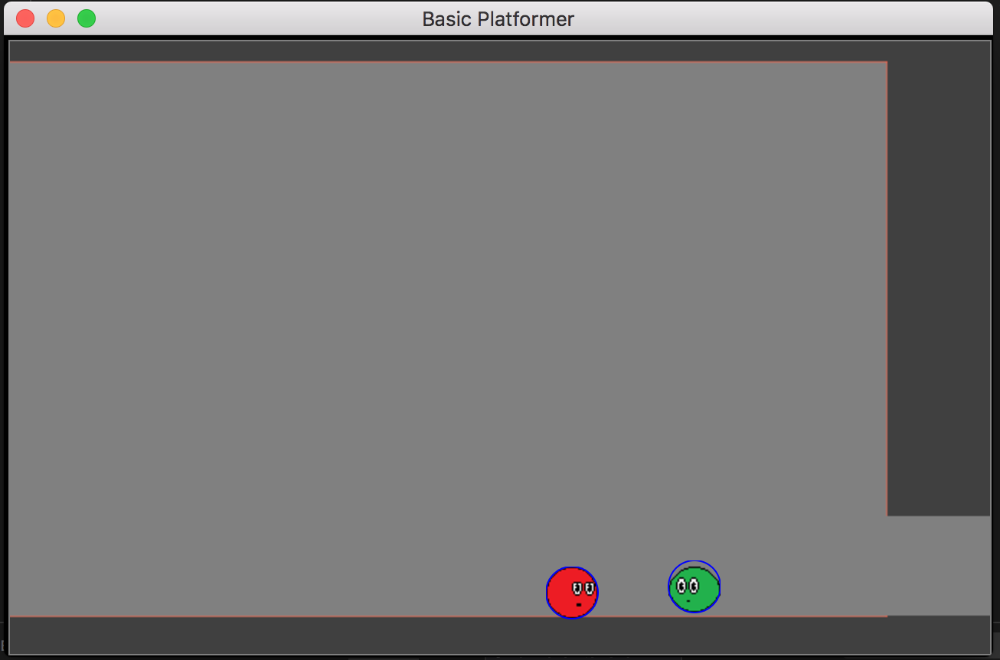
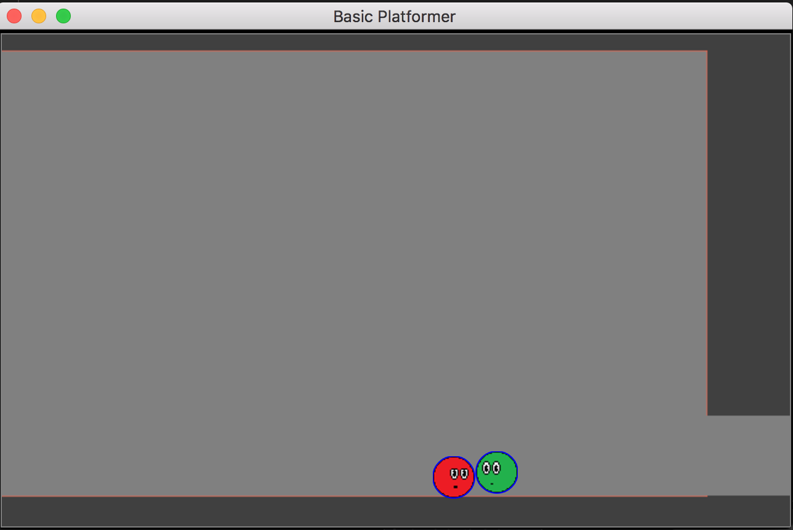
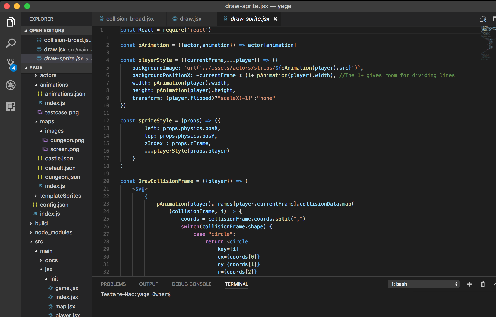

About YAGE
<Click here to see project on Github>YAGE (Yet Another Game Engine) was a project I did for fun during my summer break in 2017. I had done a coding challenge as part of the interview process for a start-up in the town of my college, in which they used a modern version of javascript with React. I hadn't really used any updated version of javascript before, though I used a javascript for the Retention Tree Project in 2015. This coding challenge sparked my curiousity about javascript and React, especially since I was beginning to learn about and love functional programming.
Another contributing factor was the new "electron" technology. I thought it was brilliant, leveraging the UI capabilities of web tech for native applications. Also, I have wanted for a while to try making a game engine (for learning experience).
All of these plus a three-month trial subscription to the coding school website Pluralsight, I decided to make a hack at a video game engine. It would give me a chance to leverage javascript, electron, Node.js, React, HTML/CSS, and my understanding of game engines from a class I took online during my senior year of highschool.
 Here is an example using my "test assets", or basically a simple game created to test the engine. Ideally the whole project would include creating the game engine, a simple game to prove the engine, and an editor so my friends and others would be able to create their own games, maybe even get some of my other friends interested in programming!
The project is not complete! My summer break ended in an internship, and then back to school right after. My priority now is my senior project ORCA, but hopefully I'll find some friends and finish up this project! However, the main purpose of the project was always more about exercising my mental muscles and learning some technologies I wasn't familiar with, and that end has already been achieved.
Current features: Reads JSON data to create game assets, creates animated sprites, basic collision detection, keyboard and mouse inputs. I did my best to write my code in an easily expandable and understandable way, with good cohesion and coupling.